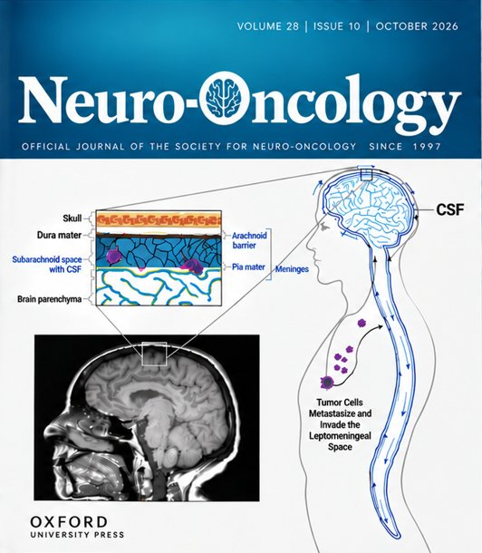
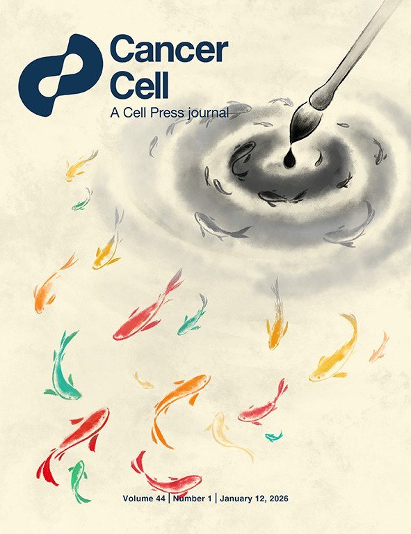
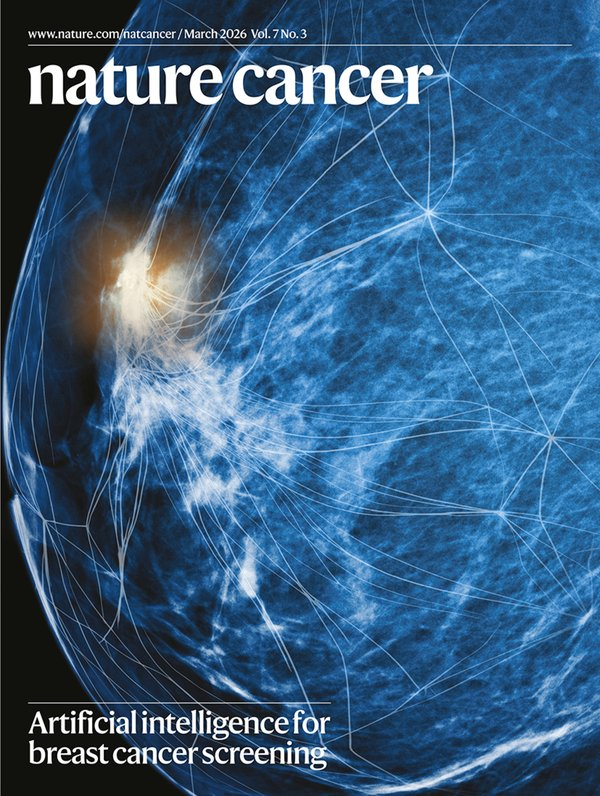
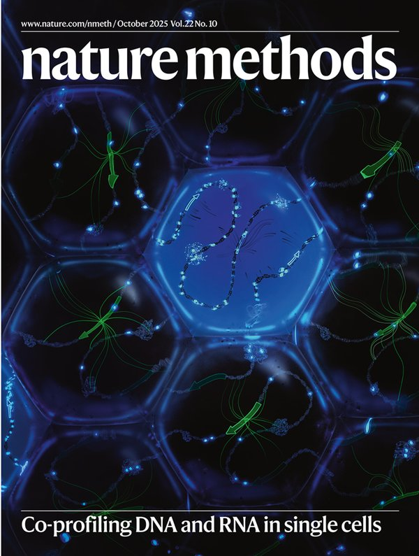
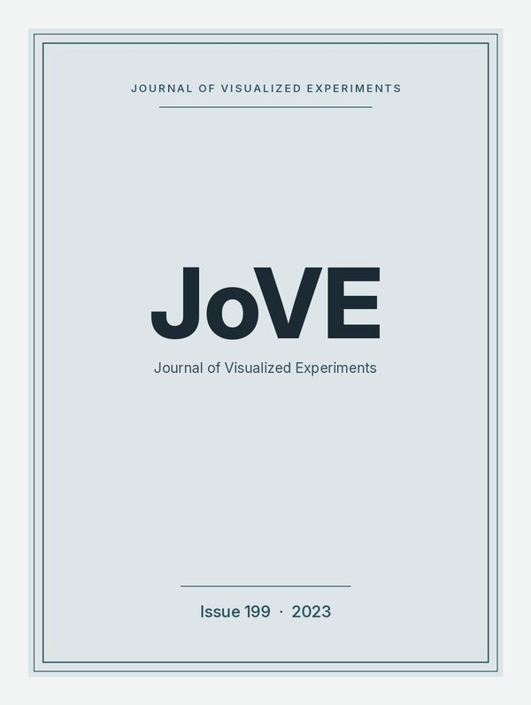
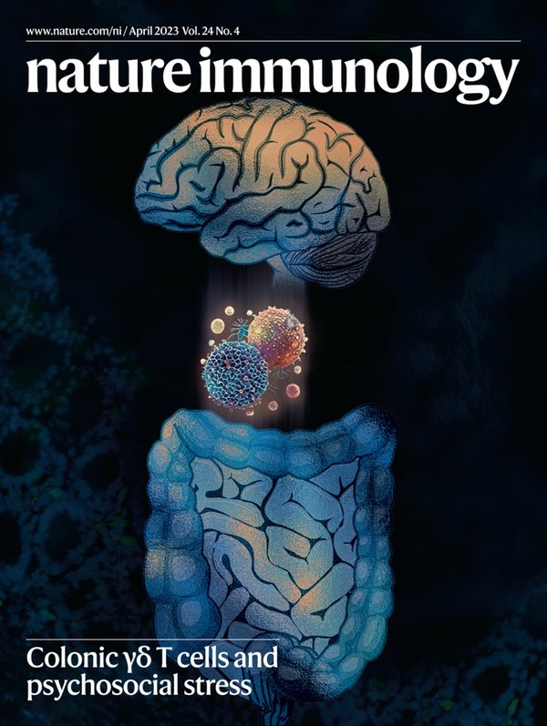
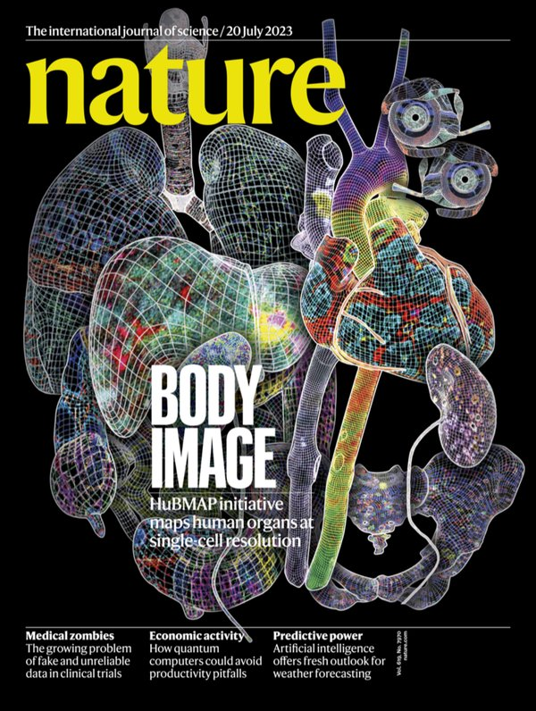

Publications
ORCID: 0000-0002-0276-6590
PubMed: Click here for all publications
Preprints
-
Spatially Resolved Epithelial States Delineate Immunosuppressive Niches of Impaired Myeloid Antigen Presentation in PDAC
All 11 authors
Walker C, Wang R, , Benard B, Pelz C, Eng J, Hawthorne K, Sears R, Gentles AJ, Risom T, Angelo M
bioRxiv. 2026;2026.07.28.741300. 10.64898/2026.07.28.741300
Select journal publications
-

MAPK-driven glioma progression and reprogramming of the tumor-associated immune response
All 21 authors
Hashemi E, Akshaya RL, Wang L, Bergland S, , Ranek JS, Voong V, Kshirsagar A, Shai A, Oberlton B, Kumar A, Berger MS, Chang EF, Oldham MC, Prins RM, Bendall SC, Angelo M, Hervey-Jumper SL, Okada H, Diaz A, Phillips JJ
Neuro-Oncology. 2026;28(10):2384-2400. 10.1093/neuonc/noag147
-
Anti-LAG-3 with or without anti-PD-1 in recurrent glioblastoma: a phase 1 trial
All 29 authors
Lim M, Ye X, Piotrowski AF, Desai A, Ahluwalia MS, Walbert T, Lesser G, Ellingson BM, Peereboom DM, Fisher JD, Desideri S, Jackson C, Pant A, Jain A, Verma R, Oberlton B, , Bettegowda C, Engle L, Taube J, Bendall SC, Choi J, Drappatz J, Lieberman FS, Kleinberg LR, Pardoll DM, Nabors LB, Wen PY, Grossman SA
Nature medicine. 2026;32(7):2449-2460. 10.1038/s41591-026-04475-7
-

Multi-omic landscape of human gliomas from diagnosis to treatment and recurrence
All 40 authors
, Oberlton B, Ribi M, Leow K, Ranek JS, Averbukh I, Amouzgar M, Liu CC, Franchina DG, Greenwald NF, McCaffrey EF, Kumar R, Ferrian S, Tsai AG, Filiz F, Fullaway CC, Bosse M, Varra SR, Kong A, Sowers C, Gephart MH, Nuñez-Perez P, Yang E, Travers M, Schachter MJ, Liang S, Santi MR, Bucktrout S, Gherardini PF, Connolly J, Cole K, Barish ME, Brown CE, Oldridge DA, Drake RR, Phillips JJ, Okada H, Prins R, Bendall SC, Angelo M
Cancer Cell. 2026;44(1):112-128.e6. 10.1016/j.ccell.2025.11.006
-

Temporal and spatial composition of the tumor microenvironment predicts response to immune checkpoint inhibition in metastatic TNBC
All 38 authors
Greenwald NF, Nederlof I, Sowers C, Ding DY, Park S, Kong A, Houlahan KE, Varra SR, de Graaf M, Geurts V, Liu CC, Ranek JS, Voorwerk L, de Maaker M, Kagel A, McCaffrey E, Khan A, Yeh CY, Fullaway CC, Khair Z, Simon BG, Bai Y, , Risom T, Delmastro A, Hartmann FJ, Mangiante L, Sotomayor-Vivas C, Bendall SC, Schumacher TN, Ma Z, Bosse M, van de Vijver MJ, Tibshirani R, Horlings HM, Curtis C, Kok M, Angelo M
Nature Cancer. 2026;7(3):435-450. 10.1038/s43018-026-01114-5
-

Automated classification of cellular expression in multiplexed imaging data with Nimbus
All 21 authors
Rumberger JL, Greenwald NF, Ranek JS, Boonrat P, Walker C, Franzen J, Varra SR, Kong A, Sowers C, Liu CC, Averbukh I, , Vanguri R, Nederlof I, Wang XJ, Van Valen D, Kok M, Bendall SC, Hollmann TJ, Kainmueller D, Angelo M
Nature Methods. 2025;22(10):2161-2170. 10.1038/s41592-025-02826-9
-

Rapid Setup of Tissue Microarray and Tiled Area Imaging on the Multiplexed Ion Beam Imaging Microscope using the Tile/SED/Array Interface
All 7 authors
, Oberlton B, Kong A, Camacho Fullaway C, Reddy Varra S, Sowers C, Tsai AG
Journal of Visualized Experiments. 2023;(199). 10.3791/65615
-

Spatial proteomics of tumor microenvironments reveal why location matters
Nature Immunology. 2023;24(4):565-566. 10.1038/s41590-023-01471-8
-

A spatially resolved timeline of the human maternal-fetal interface
All 24 authors
Greenbaum S, Averbukh I, Soon E, Rizzuto G, Baranski A, Greenwald NF, Kagel A, Bosse M, Jaswa EG, Khair Z, Kwok S, Warshawsky S, , Goldston M, Spence A, Miller G, Schwartz M, Graf W, Van Valen D, Winn VD, Hollmann T, Keren L, van de Rijn M, Angelo M
Nature. 2023;619(7970):595-605. 10.1038/s41586-023-06298-9